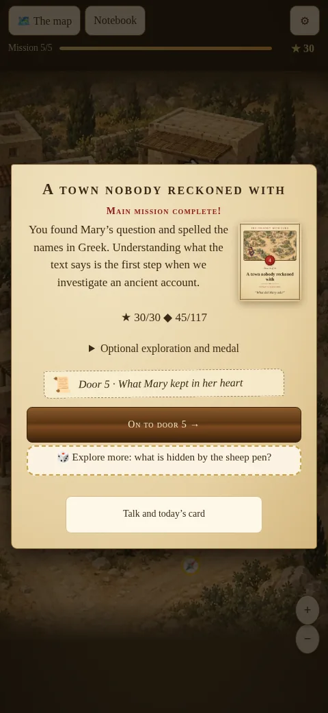

Before 1 December
Give the gift card on the first Sunday of Advent, 29 November. Then everything is ready when the calendar starts on Tuesday 1 December.
As a gift · Online Advent calendar · 1–24 December
The Journey with Luke is a Christian Advent calendar for kids and Bible advent game built on the Christmas story in Luke’s Gospel. The child becomes the apprentice of Luke the physician and solves one short case a day, 1–24 December. For ages 8 and up, well into the teens. You buy a code, and we email it to you with a printable gift card that is already filled in.
Door 1 is free, with no account. A code unlocks doors 2–24. Personal code: €24.99 / £19.99 / $24.99. Family code for the whole household: €49.99 / £39.99 / $49.99. A one-time purchase, no subscription.

If you would rather write the code yourself, you can download a blank gift card (PDF).
Give the gift card on the first Sunday of Advent, 29 November. Then everything is ready when the calendar starts on Tuesday 1 December.
If the code is given in the middle of December, the doors up to and including that day are open at once, and a new door opens each day through to Christmas Eve. The child can catch up when it suits.
After Christmas Eve all 24 doors are open, and the game stays open at least until 31 January 2027. So the code can also be a Christmas present, played through the holidays.
€24.99 / £19.99 / $24.99
Unlocks doors 2–24 for one person.
€49.99 / £39.99 / $49.99
Unlocks doors 2–24 for the whole household, on all the devices you have at home. The same price as two personal codes.
If you give to children, grandchildren or someone you know in several homes, each home needs its own code.
On this English site you pay in Stripe Checkout. Prices in euro and pounds include VAT. The price in dollars does not include US sales tax, which Stripe adds where it applies. The checkout will show the amount you pay.
You pay once for the code, and then it is done. Inside the game there is no shop, no coins to buy and no offers that pop up. There is no account and no log-in, and progress is stored only on the device you play on.
Yes. The gift card with the code comes as a PDF with the email. Does the child live somewhere else? Send the PDF by email or message to the parents. They can print it, or scan the QR code straight from the screen. Share the card only with the person the gift is for. If you give to children, grandchildren or someone you know in several homes, each home needs its own code.
Yes. You can download a blank gift card (PDF) and write the code on it yourself.
Then the doors up to and including today’s date are open at once, and a new door opens each day through to Christmas Eve. You can catch up with the days when it suits you.
The game sends nothing about the child. How far the child has come, and the answers in the game, are stored only in the browser on the device the child plays on. There is no account, no log-in and no statistics in the game. There is more in the privacy policy.
Yes. The game runs in the browser on a phone, a tablet and a computer, with nothing to install. A new door needs the internet the first time it is opened. After that it can be played offline on the same device. On iPhone and iPad, iOS 16.4 or later is needed.
See the terms of sale. When you buy on this English site, Stripe is the seller of the payment. Customers can contact Link support to request a refund. If something does not work, you can also write to us.
Door 1 is a whole door, just like the other 23. Play it yourself, or with the child, before you decide.
More: About The Journey with Luke · For grandchildren · Homeschool Advent · For older kids · Free activity sheets